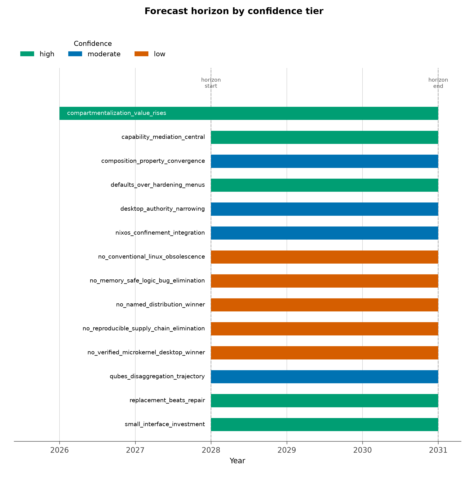

Forecast: 2028–2031
The forecasts in this section cover the 2028–2031 horizon. They are reasoned expectations drawn from documented designs, the capability evidence assembled in [@sec:threat_model], and the platform reviews of [@sec:qubes] through [@sec:comparators]. They are not commitments, not measurements, and not claims about any project’s roadmap or release schedule. Official assessments bracket the near end of the horizon, and both are recent enough to describe the posture the forecast extends. The UK NCSC’s assessment published in May 2025 at CYBERUK — its second look after the January 2024 original [ncsc_ai_threat_2024] — projects AI-assisted reconnaissance, vulnerability research, exploit development, and social engineering through a 2027 horizon, while considering fully automated, end-to-end advanced attacks unlikely within it [ncsc_ai_cyber_threat]. A year later, the CISA-led Five Eyes guidance on careful adoption of agentic AI services states the defensive counterpart: sandboxed deployment, early agents restricted to low-risk tasks, threat-model-based evaluation, and red-teaming as adoption prerequisites [cisa_agentic_guidance]. Together the two documents are the current official posture: offense is accelerating inside known boundaries, and defenders are advised to adopt capability under containment rather than withhold it. DARPA’s AIxCC results anchor the defensive engineering side within the same bracket: machine-discovered and machine-patched vulnerabilities, including real non-synthetic flaws, are already demonstrated [darpa_aixcc_results]. The forecast assumes both curves move through and beyond the bracket. It declines to assume that attacker capability improves while defensive engineering stands still.
Highest-confidence architectural bets
The forecast register records 14 claims: 5 high-confidence architectural bets, 4 execution-dependent outcomes, and 5 claims the analysis declines to endorse. The high-confidence bets are architectural in a specific sense: each follows from the structure of the threat rather than from any vendor’s plans.
Compartmentalization value grows with exploitation frequency. If offensive automation raises how often exposed components fail, architectures that protect the rest of the system after a failure gain value mechanically. This supports Qubes-like strict domain separation and disposable execution — not as a claim that any hypervisor is unbreakable, but because QSB-118’s route from an already-compromised qube to dom0 command injection under specified conditions shows both the value of the boundaries and the standing obligation to patch the management plane that guards them [qsb_118].
Capability mediation becomes as important as exploit mitigation. More capable agents raise the value of distinguishing what an agent can propose from what it can authorize ([@sec:agentic_authority]). Operating-system isolation and application-level, API-level authorization must work together; neither substitutes for the other, which is the property independence of [@sec:evaluation_framework] applied forward.
Fast, trustworthy replacement beats elaborate repair. Against uncertain compromise, rebuilding from known-good configuration plus credential revocation dominates forensic repair on an unverified footing — especially when authorized misuse may have left no exploit trace at all ([@sec:opsec]). This favors declarative and image-based operations, with mutable data and secrets handled separately rather than swept into the rebuild ([@sec:nixos]).
Small interfaces deserve disproportionate investment. The components that move bytes, credentials, approvals, and device access across domains are natural targets. Their size, privilege, implementation language, and policy semantics can matter more than the number of isolated workloads on the other side of them. qrexec’s policy-mediated request channel [qubes_qrexec] and the GUI/admin-domain disaggregation in Qubes 4.3 [qubes_43_release_notes] are instances of the pattern: concentrate care where authority crosses.
Coherent defaults beat optional hardening menus. A baseline that survives browser updates, developer workflows, and ordinary maintenance is worth more than many switches operators cannot safely combine. The maintainer discussion proposing deprecation of NixOS’s hardened profile documents the failure mode directly: a menu of restrictions without a coherent baseline can undermine browser sandboxing unless compensating setup is supplied [nixos_hardened_profile_deprecation].
Execution-dependent trajectories
Three trajectories are promising but decided by execution rather than architecture.
Qubes: disaggregation without fragility. Qubes 4.3 moves complex components — the GUI stack, administrative services — out of the most privileged domain, alongside new device-assignment mechanisms and initial Wayland work [qubes_43_release_notes]. The open question is whether the resulting reduction in privileged attack surface arrives without operational fragility that pushes users to collapse their compartments, which would trade the human-usability property for the containment property. The trajectory is the right one; its delivery conditions are not yet settled.
NixOS: confinement and integrity as one baseline. The open question is whether reproducible configuration integrates with a coherent confinement and integrity baseline — the security wiki documents incomplete SELinux and AppArmor integration, and Lanzaboote remains in development [nixos_security_wiki; nixos_lanzaboote_wiki] — rather than remaining largely an operator-assembled composition. The composable potential is real ([@sec:nixos]); whether it becomes a maintained default rather than a skilled operator’s assembly job is an execution question. The support lifecycle sharpens it: NixOS 26.05’s seven-month window of security fixes, ending December 31, 2026, makes an explicit update process a precondition of any claim on the platform [nixos_2605_announcement].
Conventional desktops: permission narrowing while usable. secureblue documents allocator hardening, a confined browser, removal of SUID-root programs, and deliberate namespace restrictions [secureblue_features]; Flatpak’s own documentation describes a restrictive base sandbox whose permission grants expand access and warns about unrestricted bus access [flatpak_permissions]. The trajectory question is whether application permissions and agent authority narrow substantially while remaining usable — whether the desktop permission model converges on something operators keep rather than disable.
The attractive destination
The composition worth building toward is a compartmentalized system whose small privileged services are memory-safe where feasible, whose core security properties carry strong verification [klein2009], whose boot and update paths authenticate the intended software, and whose environments can be independently rebuilt. Each property closes a different failure class: containment for exploitation, verification for defects in privileged services, authenticated update for supply-chain substitution, rebuildability for persistence and unauthorized change. None substitutes for the others — that non-substitutability is the property independence of [@sec:evaluation_framework] restated as a design program. The destination is a composition, and composition quality is precisely what no reviewed product yet supplies as a default ([@sec:qubes]; [@sec:nixos]; [@sec:desktops]). [@fig:forecast_horizon] arranges the registered forecasts by confidence tier across the horizon.

Forecasts this analysis declines
Four forecasts would be overconfident, and naming them is part of the forecast. A verified microkernel does not automatically yield the best practical desktop: seL4’s proofs are scoped to the kernel under stated hardware and boot assumptions [sel4_verification_assumptions; klein2009], and a verified core does not verify the browser, the driver stack, the firmware chain, or the workflow. A memory-safe rewrite does not eliminate logic vulnerabilities: memory safety removes one defect class while confused-deputy and authorization defects remain fully available [hardy1988]. Reproducible packages do not eliminate supply-chain compromise: reproducibility plus signature verification establish build integrity, not source benignity, and a trusted signer can still distribute a harmful artifact [nix_cache_signatures]. And conventional Linux is not obsolete merely because offensive agents improve: maintenance quality, deployment competence, and reachable authority decide outcomes, and a competently maintained conventional system can outrun an ambitiously isolated but neglected one. Each declined forecast fails the same way — it substitutes one property for the whole composition.
The decisive uncertainty
The main uncertainty is not whether additional isolation can be useful. It is which projects can deliver stronger boundaries, usable delegation, reliable updates, and sufficient compatibility together, without pushing users into insecure workarounds. Under offensive-AI pressure, the operative failure mode shifts from missing protection to abandoned protection: the compartment the operator collapses under deadline pressure, the update process that decays, the delegation that widens for convenience ([@sec:cognitive_security]). A forecast about architecture is therefore always partly a forecast about maintenance and ergonomics. The 2028–2031 window will be decided less by any single breakthrough than by which compositions people can actually keep.